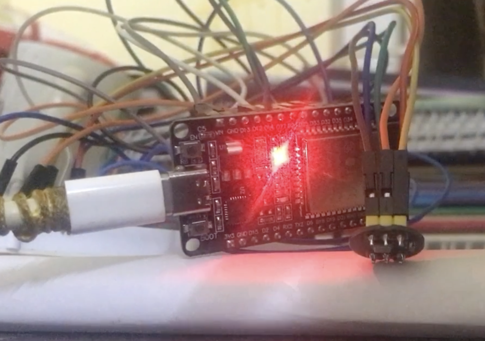

it was my internhip period, summer of 2026 and also a summer leave from my uni. most of the students went home, but i stayed to save up the flight fare since it was too expensive. I had too much free time so learned how a processor (cpu) works and tried to build one. I searched resources on the internet and the final result was a basic cpu that could run pretty cool programs like a game and a text editor.
the whole idea began i was having a conversation with my friend (hes in abu dhabi working as a ads director or something similar). he was taking about building something but not quite something, he was into business by interest and was alwasy brainstorming ideas. So while having a conversation one idea popped onto my head, the ideas was to build build a plush that could talk to children in a very natural way. he was invested as soon as he heard this and me being a computer science student was confident that i can build not exactly but something similar. I searched up on the internet "ai plush" and "smart plush", i saw a lot of results but most of them felt kinda sketchy and few which were legit was around $200 which is quite expensive for a toy to begin with. Even tho there were already toys like these available we still decided to move on with this one.
however, i knew nothing about hardware, which is really stupid because to build something like we've plan, hardware is necessary or its the only core part of the product. Nevertheless, i had one more month of free time so i decided to do nothing but learn about hardware. So after 1-3 days of research, i learned about microcontrollers and raspberry pis. And for the next 10 days i learnd and understood basic electornics like volts, amps, omhs law and other essential or topics. Our goal was to build a affordable toy, so instead of choosing raspberry pi i choose to test with esp32 (an general purpose microcontroller) since its kinda cheap.
a microcontroller was around $5 and a raspberry pi (which is a full flege computer which would have made my job easier) was around $24. for next 14 days i learnt about microcontroller and immediately loved it. It was a computer that could do one specific job. it had no os which meant no easy way to make things done. along the way i schooled myself about alot of things
- communication protocols
- electornics
- memory management
- and more minute things
i experimented with an inmp441(a omnidirectornal mic) and max98357 (basically an amp for audio output), because our project needed this to function. it was quite frustratiing sometimes when things didn't worked and i was clueless if it was the hardware or the code.
esp32 could be programmed with c++ with arduino library, which made it little bit easy since first, the arduino library had a simplier i2s(and audio communication protocol) implementation and second, i already knew c++.
after a lot of fails, i succesufully make an esp32 take pcm byte(pulse code modulatio) from the mic and output pcm thru the speaker. this was part of the while design, since esp32 has very limited memory and processing power so i didn't want it to do any high computational task, i wanted to outsources it to a backend server! the esp32 will just act like pipe (take pcm, and give pcm).

it was pretty cool to see what i had learnt and build in past 20 days, i am quite sure the code i've written is no where near production level code, but it works at the moment. now that the hardware is kinda ready, now i will be working on the server that will do the actual job.
stay tuned for part 2